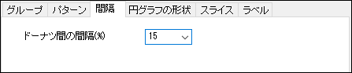

(作図の詳細)「間隔」タブ
PD-Dialog-BoxChartOutliers-Tab
間隔タブで利用可能なオプションは、データプロットの種類によって異なります。 このタブからアクセスできるすべてのオプションについて説明します。
縦棒/横棒
|
|
|
| 2D縦棒/横棒グラフ
|
サブグループ化された2D縦棒/横棒グラフ
|
ヒストグラムおよびボックス
|
|
|
| サブグループ化されたボックス / ヒストグラム
|
サブグループ化なしのボックス / ヒストグラム
|
ドーナツ、ウィンドローズ、シュティフ
| 
|
|
| ドーナツグラフ
|
ウィンドローズグラフ
|
|
|
|
| シュティフダイアグラム、棒グラフマップ
|
|
棒/ボックス/ドーナツ間の間隔(%)
コンビネーションボックスで値を設定して、各X値またはドーナツに対する縦棒、横棒、ボックスの間隔を制御します。単位は、各X値またはドーナツに対する縦棒、横棒、ボックスの幅のパーセンテージです。これはキーボード入力とドロップダウンリストの選択、の両方で設定できます
デフォルト値は20で、値は0から100までの範囲を指定できます。ドーナツグラフでは、このオプションは-100から100まで設定できます。入力値が整数ではない場合、繰り上げされて次の整数値になります。
Note:
- シュティフダイアグラムの場合、棒間の間隔(%)でポリゴン間の間隔を設定できます。
- 棒グラフマップでは、棒間の間隔(%)で全ての棒グラフの棒の間隔を設定します。
サブグループ間/サブグループ内の間隔
グラフのサブグループが有効になっている場合は、サブグループ間の間隔を編集できます。ボックスチャートまたはヒストグラムの場合は、間隔を調整するためにサブグループ内の間隔(%、負の値は重なり)も利用できます。
- サブグループ間の間隔が0のとき、「サブグループ1」と「サブグループ2」の間隔は無くなります。
- サブグループ間の間隔が100のとき、サブグループ間の間隔は棒間の間隔と等しくなります。つまりサブグループ間の間隔が棒間の間隔よりも大きくないことを意味します。
- 棒間の間隔が負の値のとき、サブグループ間の間隔は無効になります。
- サブグループ間の間隔が0のとき、サブグループ内の間隔(%、負の値は重なり)とボックス幅を使用して、隣接する2つのボックス間の間隔を調整できます。
- サブグループ間の間隔が100のとき、ボックス幅は0になり、同じサブグループ内のボックスが重なります。 サブグループ内の間隔(%、負の値は重なり)が100の場合、ボックス幅は0になります。
- サブグループ内の間隔(%, 負の値は重なり)に負の値を入力すると、同じサブグループ内の縦棒/横棒/ボックスを重ねます。
重なり (%, 負の値は間隔)
このコンボボックスは、次の2つの場合に使用できます。
このコンビネーションボックスから値を選択することができます。 特定のX値に対して、縦棒/横棒の重なりの比率になります。パーセントの値は間隔/重なりと棒の幅との相対的な比率です。負の値は棒の間の間隔を意味します。値が0の場合、重なりも間隔もありません。
デフォルトの値は0です。使用できる値は-100 から 100です。
異なる区分からの棒の間隔(%)
トレリスプロットのような複数パネルのグラフでは、区分タブの区分を重ねるにチェックをつけて区分を重ねる（複数パネルを一つのパネルに統合する）ことができます。
縦棒/横棒トレリスプロットでこれを行う場合は、間隔タブの異なる区分からの棒の間隔を使用して、重なりを避けるために異なるパネルの棒間に間隔を追加できます。
幅 (%)
棒の幅をコントロールするデータセットを指定します。
ドロップダウンリストから列（データセット）を選択します。棒間の間隔と重なりと組み合わせ、データセットの値で相対的な縦棒/横棒の幅を指定します。値は倍率(下記参照)で掛けられています。
値は0以上である必要があります。幅(％)が0の場合、棒は垂直/水平な線として表示されます。
倍率
このコンビネーションボックスを使用して、幅(%)の値に掛ける倍率を指定します。
倍率を入力またはドロップダウンリストから選択して選びます。正の整数か0を入力できます。
倍率が0の場合、幅 (%)の値が、X軸スケール値に対しての棒の幅として使用されます。
サブセット
プロットをサブセットに分けるか指定します。サブセットに分ける場合、サイズによる、または列による（カテゴリー値の）から選択します。
サブセットの設定は全てのグループ化グラフで利用できるわけではありません。たとえば、このコントロールはグループ化された縦棒グラフと散布図には使用できますが、トレリスプロットプロットには使用できません（グループ化は 区分タブ)で制御されます）。
サブセット グループは次の条件下で使用可能です。
- Xデータが自動(データプロット名が作図の詳細ダイアログで<自動X、Y>となるもの)のプロット。X値が自動に設定される場合はいくつかありますが、このとき（たとえば、グループ化された列プロットまたは散布図）、X軸の「スケール」を構成するために1つ以上のグループ列が使用されます。
-
- そしてパネルを有効にするがオフになっています。（パネル タブで、両方向になしが選択されている）
-
...または
...または
- 任意のXデータがあり、X軸目盛ラベルのタイプがデータセットからのテキストで、軸ラベルの定義に使用しているデータセットがXデータのプロット。
| サブセットを設定
|
- なし: 列をサブセットに分割しません。この列プロットの例では、列は等間隔に並んでいます。
_Spacing_Tab/Subset_column_example_none.png)
- サイズによる: サブセットの数を指定して、列を複数のサブセットに分類します。サブセットサイズが0の時、サブセットを使うことはできません。次の例では、サブセットサイズ = 4で、4つの列からなる各グループ間に大きな間隔があることがわかります。
_Spacing_Tab/Subset_column_example_bySize.png)
- 列による:ワークシート列のカテゴリー値によって列をサブセットに分割します（特に、不均衡なグループ化グラフで使用します）。ドロップダウンリストからワークシート列を指定します。次の例では、列のグループ化に対するサブセットの効果が見えます。（分かりやすくするために主グリッド線をオンにしています）。
-
-
_Spacing_Tab/Subset_column_example2.png)
|
| サブセット間の間隔(%)
|
サブセットサイズが0ではない場合、サブセット間の間隔(%)をドロップダウンで選択するか直接値を入力します。これは、棒の太さのパーセンテージです。
|
| Note: サブセットが有効になっている場合、上のグループ化された縦棒グラフに表示されているような目盛ラベル表は、サブセットコントロールとX軸ダイアログボックスの目盛ラベルタブにある、表タブのラベルを統合の設定の組み合わせを使用して構成されます。
例えば、次の例では、サブセットは列による= Genotypeにすると、Treatmentの目盛ラベル行がラベルを統合設定に影響されることが分かります。
目盛ラベルの設定の詳細については、軸ダイアログ目盛ラベルタブをご覧ください。
|
シンボルのオフセット(%)
ボックスチャートでは、各ボックスの個々のデータポイントの分布を表示できます。このコントロールを使用して、既存の点配置をボックスに対して正の方向（右）または負の方向（左）に移動します。
ボックスチャートにおけるデータポイントの表示と編集については、作図の詳細のボックスタブとデータタブの文書を確認してください。
交互オフセット
このチェックボックスを有効にすると、既存の点配置が各プロットの中心から交互に（左、右、左、右など）、シンボルのオフセットで移動します。
スポークスタイル
このオプションはウィンドローズグラフでのみ利用できます。ここでスポークのスタイルを指定できます。
- スポークスタイルとしてセクターを使用します。
- このオプションは、第1ブロックの幅として第1セクターの開始幅を使用します。
- Note: 凪を示す円を表示していない場合、すべてのパドルは線として表示されます。
パドル増分(%)
このオプションはウィンドローズグラフでのみ利用できます。スポークスタイルとしてパドルを選択すると、このオプションを利用可能です。
前のプロット/幅の次の幅を定義できます。デフォルトでは、パドル増分は20%です。つまり、各プロットの幅は、その前のプロットの1.2倍になります。